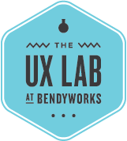

Free User Experience Consulting for Organizations That Do Good
User-centered research, experience design and innovation consulting for non-profits, students, and government and civic organizations.
How It Works Apply
About the UX Lab
Our mission is to advance the practice of user experience design and increase design literacy in Madison and surrounding areas by bringing the best minds together to help non-profits, government and civic organizations and students enhance the experience of their products and services. The UXLab is run out of Bendyworks, during time given to us to learn, grow and give back.
WHAT WE DO
USER RESEARCH
User interviews, contextual inquiries and ethnographies, diary studies, card sorts
USABILITY TESTING
Usability testing, task analysis, heuristic analysis, focus groups, feature validation, A/B testing
INNOVATION WORKSHOPS
Mental modeling, collaborative design, prototyping workshops, lectures and talks